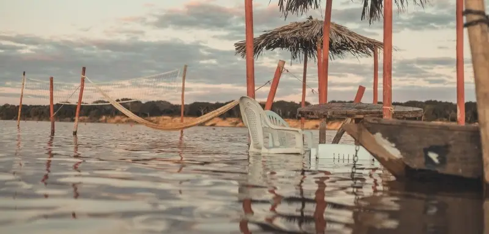

Sobre o local
Quem disse que Minas não tem mar? Em Januária, às margens do Velho Chico, surge a charmosa Praia de Minas. Entre julho e outubro, quando o nível do Rio São Francisco baixa, bancos de areia formam uma praia de água doce perfeita para aproveitar o sol intenso da região. O cenário ganha vida com barracas que servem o tradicional peixe frito, quadras de areia para a prática de esportes e opções de passeios de barco pelo rio. É o destino ideal para relaxar, se divertir e vivenciar de perto a beleza e a energia do São Francisco.
Dica de segurança: durante a temporada oficial de praia, a Prefeitura delimita a área de banho e disponibiliza salva-vidas, garantindo que os visitantes desfrutem do rio com tranquilidade. O nado fora da área demarcada apresenta riscos, mesmo para nadadores experientes.
Temporada oficial: da segunda quinzena de julho até a primeira quinzena de outubro (100 dias)
Horário de funcionamento: Visitação livre diariamente com barracas funcionando até às 21 horas
Tipo de visita: Visita livre
Formas de pagamento: Não há cobrança para acesso
Pet Friendly: Não
Contato: Secretaria de Turismo - (38) 99266-4400
secretariamunicipalturismo@januaria.mg.gov.br